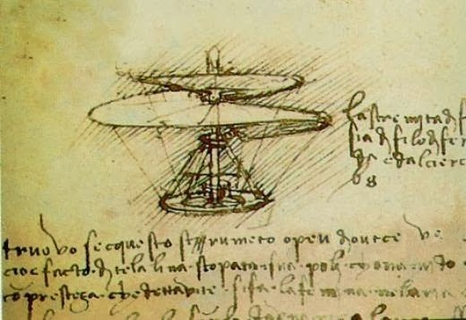
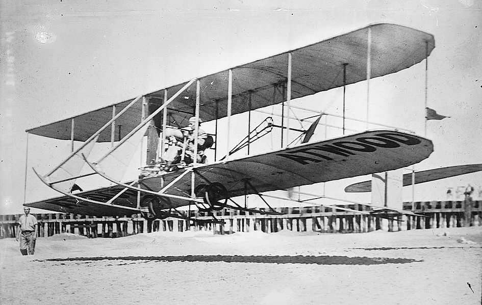
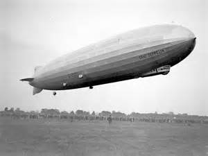

History of Aviation
The history of aviation has extended over more than two thousand years,
from the earliest forms of aviation, kites and attempts at tower jumping, to supersonic,
and hypersonic flight by powered, heavier-than-air jets.
Kite flying in China dates back to several hundred years BC and slowly spread around the world.
It is thought to be the earliest example of man-made flight.
Leonardo da Vinci's 15th-century dream of flight found expression in several rational but unscientific designs,
though he did not attempt to construct any of them.

Experiments with gliders provided the groundwork for heavier-than-air craft, and by the early-20th century,
advances in engine technology and aerodynamics made controlled, powered flight possible for the first time.
The modern aeroplane with its characteristic tail was established by 1909 and from then on the history of the
aeroplane became tied to the development of more and more powerful engines.

The first great ships of the air were the rigid dirigible balloons pioneered by Ferdinand von Zeppelin,
which soon became synonymous with airships and dominated long-distance flight until the 1930s, when large flying boats became popular.
After World War II, the flying boats were in their turn replaced by land planes, and the new and immensely
powerful jet engine revolutionised both air travel and military aviation.



{kind=link}